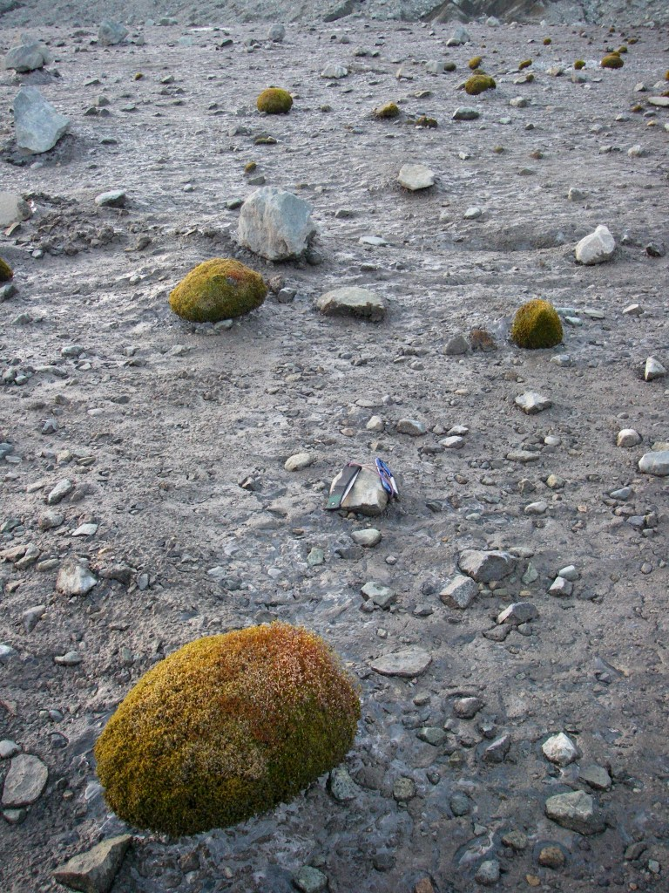
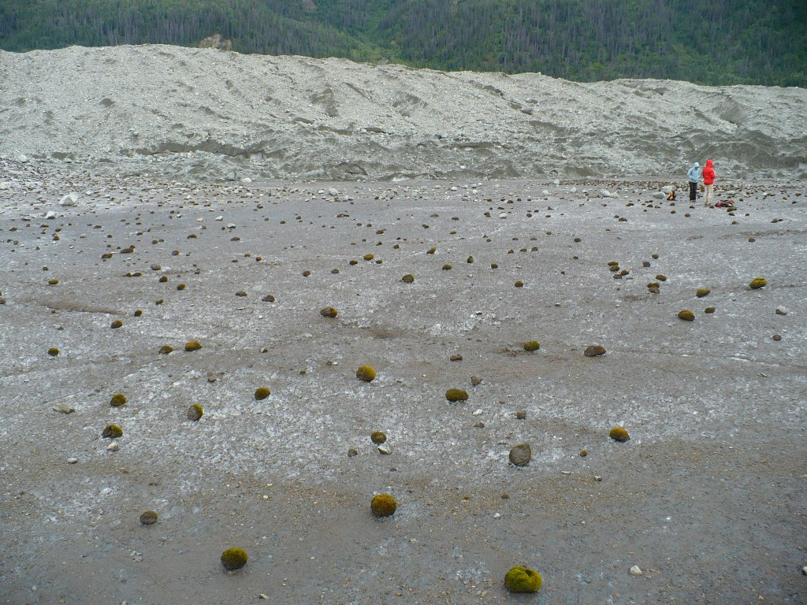
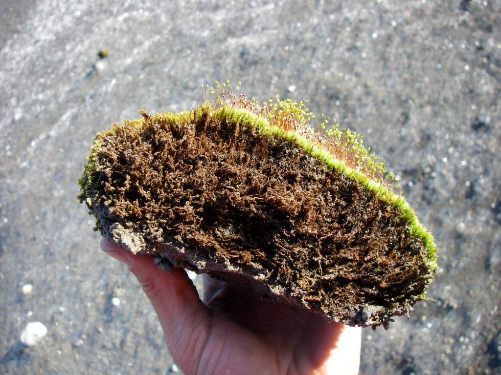

Glacier moss balls are globular, ~10 cm masses of moss, with small amounts of sediment found on some glaciers. These enigmatic, rare components of glacier biology have seen some study at select glaciers around the world, but their longevity on glaciers and patterns of motion have been entirely unknown until now.

Starting in 2009, before I'd begun my Ph.D. program, now-UIdaho professor of wildlife biology, Sophie Gilbert, and I studied an unusually dense concentration of glacier moss balls on the Root Glacier, in Wrangell-St. Elias National Park and Preserve, Alaska. We tagged individual glacier moss balls with unique colored glass beads to identify them, then revisited the colony every 5-7 days to study their motion. We also returned in subsequent years to re-identify individuals. Dr. Gilbert and I later teamed up with Dr. Scott Hotaling to publish this work.
We found that moss balls exhibited consistent, herd-like motion, changing both their speeds and travel directions together. Moss balls moved on average 2.5 cm per day, at rates somewhat controlled by the amount of glacier surface ablation. Early during our 1.5 month study period in 2009, moss balls rolled predominantly towards the south, but later moved towards the west. We weren't able to explain this migratory, herd-like motion by considering the downhill, wind, or solar radiation directions. Thus, the changing directions of their motion remains a mystery. By revisiting our site in the three subsequent years, we were able to find that moss ball growth is relatively slow and that individual moss balls can persist on the glacier for many years- at least six but potentially much longer.
This work was published in May 2020 in the journal Polar Biology. A twitter thread about this work, with more photos, is here.

